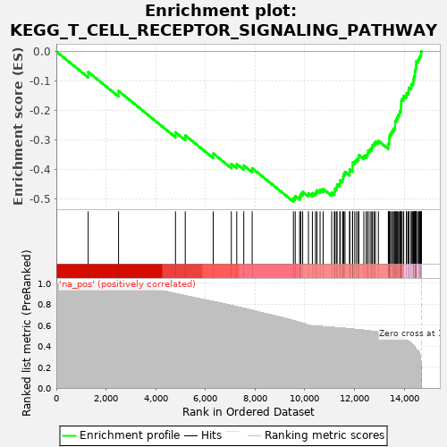
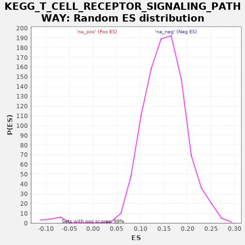

| | | Dataset | drug_embeddings_gsea |
| Phenotype | NoPhenotypeAvailable |
| Upregulated in class | na_neg |
| GeneSet | KEGG_T_CELL_RECEPTOR_SIGNALING_PATHWAY |
| Enrichment Score (ES) | -0.5099015 |
| Normalized Enrichment Score (NES) | -5.881996 |
| Nominal p-value | 0.0 |
| FDR q-value | 0.0 |
| FWER p-Value | 0.0 |
Table: GSEA Results Summary

Fig 1: Enrichment plot: KEGG_T_CELL_RECEPTOR_SIGNALING_PATHWAY
Profile of the Running ES Score & Positions of GeneSet Members on the Rank Ordered List
| PROBE | GENE SYMBOL | GENE_TITLE | RANK IN GENE LIST | RANK METRIC SCORE | RUNNING ES | CORE ENRICHMENT | | 1 | CHP2 | | | 1283 | 1.000 | -0.0692 | No |
| 2 | IL5 | | | 2504 | 1.000 | -0.1342 | No |
| 3 | NFAT5 | | | 4795 | 0.900 | -0.2742 | No |
| 4 | RASGRP1 | | | 5188 | 0.881 | -0.2847 | No |
| 5 | CD3G | | | 6313 | 0.825 | -0.3463 | No |
| 6 | IFNG | | | 7042 | 0.788 | -0.3815 | No |
| 7 | PIK3R5 | | | 7260 | 0.776 | -0.3818 | No |
| 8 | GRAP2 | | | 7543 | 0.760 | -0.3870 | No |
| 9 | CARD11 | | | 7881 | 0.741 | -0.3962 | No |
| 10 | PAK3 | | | 9541 | 0.642 | -0.4979 | Yes |
| 11 | CD247 | | | 9613 | 0.638 | -0.4909 | Yes |
| 12 | PAK6 | | | 9791 | 0.625 | -0.4913 | Yes |
| 13 | SOS2 | | | 9840 | 0.622 | -0.4830 | Yes |
| 14 | CD3D | | | 9914 | 0.617 | -0.4765 | Yes |
| 15 | CD40LG | | | 10145 | 0.599 | -0.4811 | Yes |
| 16 | NFATC4 | | | 10304 | 0.591 | -0.4808 | Yes |
| 17 | CBLC | | | 10429 | 0.589 | -0.4783 | Yes |
| 18 | NFKBIE | | | 10487 | 0.589 | -0.4713 | Yes |
| 19 | PPP3R1 | | | 10613 | 0.587 | -0.4689 | Yes |
| 20 | NFATC3 | | | 10736 | 0.585 | -0.4663 | Yes |
| 21 | PAK4 | | | 11082 | 0.578 | -0.4792 | Yes |
| 22 | ITK | | | 11188 | 0.577 | -0.4756 | Yes |
| 23 | AKT3 | | | 11209 | 0.576 | -0.4662 | Yes |
| 24 | IL10 | | | 11269 | 0.575 | -0.4595 | Yes |
| 25 | PIK3CD | | | 11299 | 0.574 | -0.4508 | Yes |
| 26 | ICOS | | | 11409 | 0.572 | -0.4476 | Yes |
| 27 | MALT1 | | | 11420 | 0.572 | -0.4376 | Yes |
| 28 | LAT | | | 11517 | 0.571 | -0.4335 | Yes |
| 29 | IL4 | | | 11545 | 0.570 | -0.4247 | Yes |
| 30 | CD3E | | | 11568 | 0.569 | -0.4156 | Yes |
| 31 | PIK3CG | | | 11617 | 0.568 | -0.4083 | Yes |
| 32 | CD8B | | | 11800 | 0.564 | -0.4102 | Yes |
| 33 | PIK3CB | | | 11808 | 0.564 | -0.4001 | Yes |
| 34 | TEC | | | 11921 | 0.562 | -0.3973 | Yes |
| 35 | CSF2 | | | 11922 | 0.562 | -0.3869 | Yes |
| 36 | VAV3 | | | 11925 | 0.562 | -0.3765 | Yes |
| 37 | LCP2 | | | 12010 | 0.559 | -0.3718 | Yes |
| 38 | CD8A | | | 12084 | 0.558 | -0.3664 | Yes |
| 39 | MAPK11 | | | 12157 | 0.556 | -0.3610 | Yes |
| 40 | VAV2 | | | 12169 | 0.556 | -0.3514 | Yes |
| 41 | PPP3R2 | | | 12374 | 0.551 | -0.3551 | Yes |
| 42 | SOS1 | | | 12466 | 0.549 | -0.3511 | Yes |
| 43 | PPP3CC | | | 12530 | 0.547 | -0.3452 | Yes |
| 44 | MAP3K8 | | | 12545 | 0.546 | -0.3359 | Yes |
| 45 | NFKBIB | | | 12628 | 0.544 | -0.3314 | Yes |
| 46 | NRAS | | | 12693 | 0.541 | -0.3257 | Yes |
| 47 | MAP2K7 | | | 12723 | 0.541 | -0.3176 | Yes |
| 48 | PPP3CB | | | 12788 | 0.539 | -0.3119 | Yes |
| 49 | PRKCQ | | | 12841 | 0.537 | -0.3054 | Yes |
| 50 | IL2 | | | 12960 | 0.532 | -0.3036 | Yes |
| 51 | DLG1 | | | 13360 | 0.515 | -0.3213 | Yes |
| 52 | ZAP70 | | | 13367 | 0.515 | -0.3121 | Yes |
| 53 | RHOA | | | 13398 | 0.513 | -0.3046 | Yes |
| 54 | NFATC2 | | | 13400 | 0.513 | -0.2951 | Yes |
| 55 | CTLA4 | | | 13406 | 0.513 | -0.2858 | Yes |
| 56 | CD4 | | | 13449 | 0.510 | -0.2792 | Yes |
| 57 | MAPK12 | | | 13491 | 0.507 | -0.2725 | Yes |
| 58 | NCK2 | | | 13536 | 0.504 | -0.2661 | Yes |
| 59 | PAK1 | | | 13591 | 0.500 | -0.2605 | Yes |
| 60 | CBLB | | | 13633 | 0.498 | -0.2540 | Yes |
| 61 | MAP2K2 | | | 13634 | 0.498 | -0.2447 | Yes |
| 62 | PIK3CA | | | 13636 | 0.498 | -0.2355 | Yes |
| 63 | MAPK13 | | | 13685 | 0.495 | -0.2296 | Yes |
| 64 | PAK2 | | | 13719 | 0.492 | -0.2226 | Yes |
| 65 | VAV1 | | | 13753 | 0.489 | -0.2158 | Yes |
| 66 | MAP3K7 | | | 13809 | 0.485 | -0.2105 | Yes |
| 67 | PTPN6 | | | 13824 | 0.484 | -0.2024 | Yes |
| 68 | BCL10 | | | 13862 | 0.481 | -0.1960 | Yes |
| 69 | PDCD1 | | | 13867 | 0.480 | -0.1873 | Yes |
| 70 | AKT2 | | | 13873 | 0.480 | -0.1787 | Yes |
| 71 | PLCG1 | | | 13876 | 0.480 | -0.1698 | Yes |
| 72 | CD28 | | | 13891 | 0.478 | -0.1619 | Yes |
| 73 | PIK3R3 | | | 13963 | 0.471 | -0.1580 | Yes |
| 74 | PIK3R2 | | | 13979 | 0.469 | -0.1502 | Yes |
| 75 | PTPRC | | | 14085 | 0.458 | -0.1489 | Yes |
| 76 | TNF | | | 14096 | 0.457 | -0.1410 | Yes |
| 77 | CDC42 | | | 14167 | 0.446 | -0.1375 | Yes |
| 78 | HRAS | | | 14175 | 0.445 | -0.1297 | Yes |
| 79 | NFKBIA | | | 14190 | 0.442 | -0.1224 | Yes |
| 80 | NCK1 | | | 14279 | 0.427 | -0.1204 | Yes |
| 81 | CHUK | | | 14282 | 0.426 | -0.1126 | Yes |
| 82 | NFATC1 | | | 14330 | 0.417 | -0.1080 | Yes |
| 83 | LCK | | | 14366 | 0.409 | -0.1028 | Yes |
| 84 | CDK4 | | | 14368 | 0.408 | -0.0952 | Yes |
| 85 | MAPK9 | | | 14388 | 0.405 | -0.0890 | Yes |
| 86 | IKBKB | | | 14402 | 0.399 | -0.0824 | Yes |
| 87 | KRAS | | | 14429 | 0.393 | -0.0769 | Yes |
| 88 | IKBKG | | | 14430 | 0.392 | -0.0695 | Yes |
| 89 | FOS | | | 14443 | 0.387 | -0.0631 | Yes |
| 90 | FYN | | | 14462 | 0.378 | -0.0573 | Yes |
| 91 | MAPK3 | | | 14476 | 0.370 | -0.0513 | Yes |
| 92 | MAPK14 | | | 14482 | 0.368 | -0.0448 | Yes |
| 93 | PIK3R1 | | | 14486 | 0.366 | -0.0381 | Yes |
| 94 | GSK3B | | | 14490 | 0.364 | -0.0316 | Yes |
| 95 | RAF1 | | | 14562 | 0.357 | -0.0298 | Yes |
| 96 | MAP2K1 | | | 14579 | 0.351 | -0.0243 | Yes |
| 97 | NFKB1 | | | 14621 | 0.322 | -0.0211 | Yes |
| 98 | CBL | | | 14633 | 0.306 | -0.0161 | Yes |
| 99 | MAPK1 | | | 14666 | 0.254 | -0.0136 | Yes |
| 100 | RELA | | | 14675 | 0.231 | -0.0098 | Yes |
| 101 | AKT1 | | | 14676 | 0.227 | -0.0056 | Yes |
| 102 | GRB2 | | | 14682 | 0.197 | -0.0022 | Yes |
| 103 | JUN | | | 14687 | 0.176 | 0.0008 | Yes |
Table: GSEA details [plain text format]

Fig 2: KEGG_T_CELL_RECEPTOR_SIGNALING_PATHWAY: Random ES distribution
Gene set null distribution of ES for KEGG_T_CELL_RECEPTOR_SIGNALING_PATHWAY